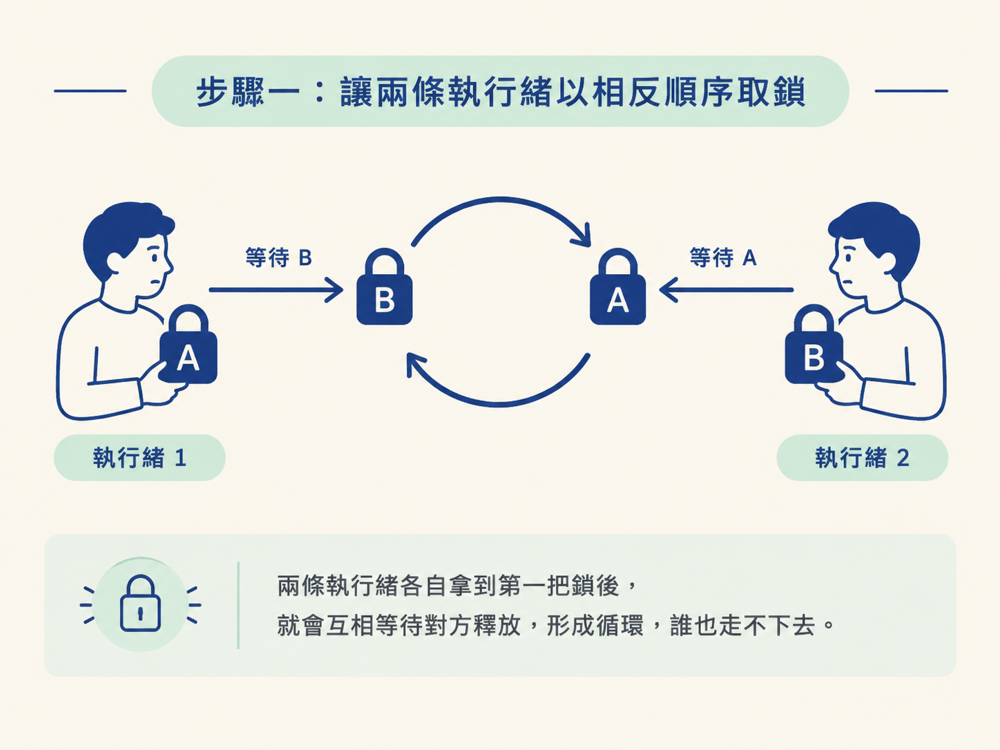
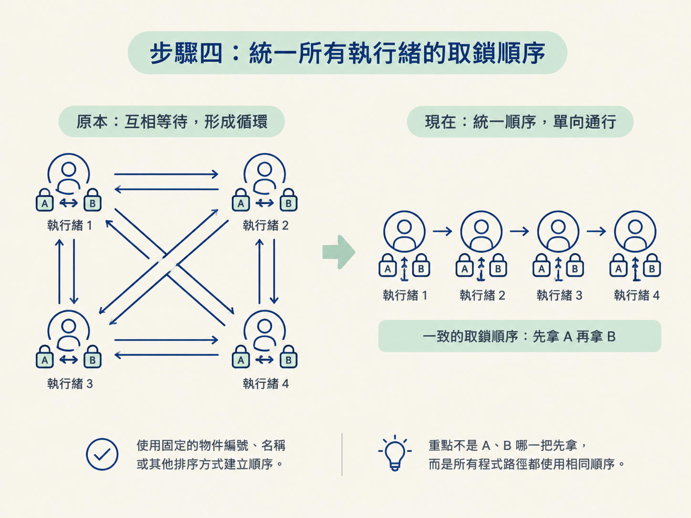

這一節要完成三件事：先實作一個能穩定重現的死鎖範例，再用「互斥、請求與保持、不剝奪、循環等待」四個必要條件，說明死鎖為什麼會發生；最後練習如何破壞其中一個條件，讓死鎖無法形成。
開始前，你只需要掌握 synchronized 的基本行為：
synchronized 鎖住的資源，同一時間只能由一條執行緒持有。第二點是關鍵。執行緒一旦「手上有一把、又等著另一把」，就可能和其他執行緒互相卡住。
線上服務偶爾會遇到一種很棘手的狀況：服務沒有崩潰，CPU 使用率也不高，但請求就是全部卡住。查看執行緒 dump 後，可能會發現好幾條執行緒都停在 synchronized 那一行，狀態是 BLOCKED。
這就是死鎖。它通常不會丟出例外，也不會自動恢復，只會安靜地把執行緒困在等待中，讓系統逐漸失去處理請求的能力。更麻煩的是，死鎖往往只會在特定的執行緒交錯順序下出現，所以平常測試不一定能重現。
這節課先用兩條執行緒、兩把鎖，製造一個最小而穩定的死鎖案例。接著逐一對照四個必要條件，最後用實務上最常見的方式——統一加鎖順序——解除這個僵局。
下面的程式準備兩個共享資源：resourceA 與 resourceB。第一條執行緒先拿 A 再拿 B；第二條執行緒則先拿 B 再拿 A。
public class DeadLockDemo {
private static final Object resourceA = new Object();
private static final Object resourceB = new Object();
public static void main(String[] args) {
// 線程 1：先拿 A，再拿 B
new Thread(() -> {
synchronized (resourceA) {
System.out.println("線程-1 拿到資源 A，準備拿 B");
sleep100(); // 讓線程 2 有時間先搶走 B
synchronized (resourceB) {
System.out.println("線程-1 拿到資源 B");
}
}
}, "線程-1").start();
// 線程 2：先拿 B，再拿 A
new Thread(() -> {
synchronized (resourceB) {
System.out.println("線程-2 拿到資源 B，準備拿 A");
sleep100();
synchronized (resourceA) {
System.out.println("線程-2 拿到資源 A");
}
}
}, "線程-2").start();
}
}這段程式的重點不在於兩把鎖本身，而在於取鎖順序不一致：
當兩條執行緒剛好各自拿到第一把鎖，就會進入這個狀態：執行緒 1 等執行緒 2 釋放 B，執行緒 2 又等執行緒 1 釋放 A。兩邊都在等對方，誰也走不下去。

執行程式後，通常會先看到兩條執行緒各自印出「拿到第一個資源、準備拿第二個」的訊息，接著就沒有後續輸出了。程式不會正常結束，也不會報錯，而是停在等待第二把鎖的狀態。
Thread.sleep(100) 在這裡不是語法上的必要條件，而是用來提高重現死鎖的穩定度。若沒有這段短暫等待，執行緒 1 可能很快就拿到 A 和 B、完成工作並釋放鎖，執行緒 2 之後才開始執行。兩條執行緒便可能錯開，死鎖也就不一定出現。
加入這段等待後，兩條執行緒幾乎都會先搶到一把鎖，接著再同時等待對方手上的第二把鎖，僵局就容易穩定形成。
這個範例之所以會死鎖，是因為四個條件同時成立。可以直接把程式中的行為對照如下：
| 條件 | 在這個例子裡怎麼體現 |
|---|---|
| 互斥 | synchronized 保證同一時間只有一條執行緒能持有 resourceA 或 resourceB |
| 請求與保持 | 執行緒 1 手上已經握著 A，卻同時還要去請求 B |
| 不剝奪 | 執行緒 1 拿不到 B 時只能等，系統不會強行把 B 從執行緒 2 手上奪過來 |
| 循環等待 | 執行緒 1 等的是（A 已持有 → 想要 B），執行緒 2 等的是（B 已持有 → 想要 A），兩個等待互相咬住，形成閉環 |
四個條件必須同時成立，死鎖才會發生。只要破壞其中任何一個條件，死鎖就無法形成。
在 synchronized 的場景中，前三個條件通常很難直接改掉：鎖本來就具有互斥性，執行緒不能強行搶走別人持有的鎖，而持有多把鎖的執行緒也不會因為等待就自動釋放已取得的鎖。因此，實務上最常處理的是第四個條件：循環等待。
最實用的做法，是規定所有執行緒都遵守同一套順序，例如一律先拿 A，再拿 B。
若執行緒 1 已經拿到 A，執行緒 2 就只能等待 A 釋放。等執行緒 1 完成工作並釋放 A 後，執行緒 2 才能取得 A，接著再去取得 B。這樣就不會出現「執行緒 1 等 B、執行緒 2 等 A」的閉環。
這個規則可以用固定的物件編號、名稱或其他排序方式建立。重要的不是 A、B 哪一把先拿，而是所有程式路徑都使用相同順序。

如果統一取鎖順序不適合目前的設計，還有其他做法。每種做法破壞的條件不同，使用時要先看清楚程式的需求。
ReentrantLock 的 tryLock(timeout)。如果逾時仍拿不到鎖，就放棄這次操作，並釋放已經持有的鎖，避免永遠等待。最危險的死鎖往往不是程式碼長得嚇人，而是兩個看起來都合理的方法，各自在內部依不同順序去拿同一組鎖。單看每個方法都對，合在一起才出問題，而且只在特定交錯下才觸發，所以更難重現。
完成這個練習後，你應該能觀察到：兩條執行緒各自印出拿到第一個資源的訊息，接著停在等待第二把鎖的階段，程式不會正常結束。
你也應該能說清楚這個結果不是偶然，而是四個條件共同造成的：互斥、請求與保持、不剝奪，以及循環等待。其中，範例的相反取鎖順序直接形成了循環等待；把所有取鎖順序統一，就能拆掉這個閉環。
死鎖是兩條（或多條）執行緒各自持有資源、又同時等待對方手上的資源，誰也不放手，於是永遠卡住。它要同時滿足互斥、請求與保持、不剝奪、循環等待四個必要條件；我們的示例用相反順序拿兩把鎖，剛好湊出循環等待。示例裡的sleep不是語法需求，而是為了讓死鎖穩定重現。避免死鎖最實用的方法是統一加鎖順序，直接破壞循環等待；其次是tryLock逾時放棄，破壞不剝奪。
這個節點的六步到這裡就完整了：從 ThreadLocal 的執行緒隔離、Latch 與 Barrier 的會合、CompletableFuture 與 ForkJoinPool 的編排與分治，一路到等待喚醒、DCL、死鎖這三個手寫題。它們都在回答同一個問題——多條執行緒要怎麼安全地合作，又怎麼避免把彼此卡死。
接下來可以回頭用每個 step 的複習題自測，或直接執行 /tackle，確認自己是否真的掌握死鎖的成因與解法。